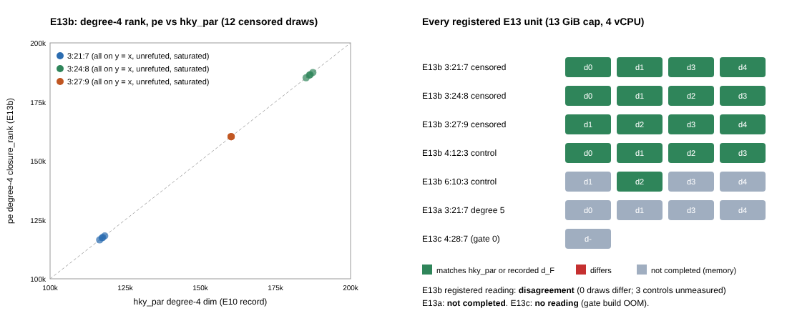

E13: independent-engine check of the E10 dF ≥ 5 draws, degree 5 at (3,21,7), and (4,28,7)
Study research/fall_degree_bounds_20261008, Amendments 17 (design, readings, predictions) and 18 (local route: 4 vCPU, 15 GB, ulimit -v 13 GiB, sequential). Source: frozen archive of main a2be6609 (sha256 18b14930…). Run 2026-11-07 22:56 → 2026-11-08 10:05 UTC, one container restart (01:37, B_3-21-7_d0 recomputed from scratch, attempt 1 kept). Gates G0 (7 tests ok) and G1 (closure_rank 131,588, diff empty) passed. Scored by e13/score_e13.py from committed files → e13/score.json.

Registered readings
| part | reading (rule as written) | recorded prediction |
|---|
| E13b | disagreement — no draw differs; 3 of 8 controls (6:10:3 d1, d3, d4, N = 58) not completed (memory), so “every control refutes” is not met | independent agreement 0.85 (A17); N=58 controls not completed 0.5 (A18) |
| E13a | not completed — 0 of 4 draws measured; each exceeded 13 GiB at degree 5 after ~19 min | dF=5 0.6, ≥6 0.3, not completed 0.1 (A17); not completed (memory) 0.85 (A18) |
| E13c | no reading — gate 0 did not build: rustc/LLVM out of memory under the 13 GiB cap applied to the whole run_window.sh; no draw computed; consistency check with E12c r3 draw 0 not possible | no reading 0.8 (A17); not completed (memory) 0.95 (A18) |
E13b censored draws (pe, --to 4, --max-cols 400000)
| cell | draw | hky_par dim₄ | pe rank₄ | dim₃ hky / pe | status | s |
|---|
| 3:21:7 | 0 | 117,335 | 117,335 | 2,338 / 2,338 | agree | 579 |
| 3:21:7 | 1 | 116,485 | 116,485 | 2,338 / 2,338 | agree | 511 |
| 3:21:7 | 3 | 118,185 | 118,185 | 2,338 / 2,338 | agree | 533 |
| 3:21:7 | 4 | 117,505 | 117,505 | 2,338 / 2,338 | agree | 586 |
| 3:24:8 | 0 | 186,549 | 186,549 | 3,056 / 3,056 | agree | 1850 |
| 3:24:8 | 1 | 187,453 | 187,453 | 3,056 / 3,056 | agree | 1827 |
| 3:24:8 | 2 | 186,323 | 186,323 | 3,056 / 3,056 | agree | 1812 |
| 3:24:8 | 3 | 185,193 | 185,193 | 3,056 / 3,056 | agree | 1813 |
| 3:27:9 | 1 | 160,259 | 160,259 | 3,870 / 3,870 | agree | 1924 |
| 3:27:9 | 2 | 160,259 | 160,259 | 3,870 / 3,870 | agree | 1903 |
| 3:27:9 | 3 | 160,259 | 160,259 | 3,870 / 3,870 | agree | 1944 |
| 3:27:9 | 4 | 160,259 | 160,259 | 3,870 / 3,870 | agree | 1934 |
Every censored draw: degree 4 saturated, not refuted, rank equal to hky_par's. The suspension clause of the “disagreement” reading lists no cell, because no draw differs.
E13b controls
| cell | draw | recorded dF | pe closure degree | status | s |
|---|
| 4:12:3 | 0 | 4 | 4 | refutes at recorded d_F | 124 |
| 4:12:3 | 1 | 4 | 4 | refutes at recorded d_F | 133 |
| 4:12:3 | 2 | 4 | 4 | refutes at recorded d_F | 131 |
| 4:12:3 | 3 | 4 | 4 | refutes at recorded d_F | 142 |
| 6:10:3 | 1 | 4 | — | not completed (memory) | 2343 |
| 6:10:3 | 2 | 3 | 3 | refutes at recorded d_F | 13 |
| 6:10:3 | 3 | 4 | — | not completed (memory) | 2594 |
| 6:10:3 | 4 | 4 | — | not completed (memory) | 2424 |
E13a: degree-5 closure at (3,21,7)
| draw | status | s |
|---|
| 0 | unmeasured (not completed, memory) | 1084 |
| 1 | unmeasured (not completed, memory) | 1133 |
| 3 | unmeasured (not completed, memory) | 1139 |
| 4 | unmeasured (not completed, memory) | 1135 |
What this does and does not show
- Shows: a second closure implementation (partial enlargement, shares only
build_decomposition_system) reproduces hky_par's degree-3 and degree-4 ranks on all 12 E10 dF ≥ 5 draws, and reproduces the recorded refutation on the 5 controls it could finish (4:12:3 ×4 at degree 4, 6:10:3 d2 at degree 3). This removes the “same-code only” objection for those draws.
- Does not show: the positive controls at N = 58 refuting at degree 4 under the second engine, so the engine's ability to detect a degree-4 refutation was confirmed only at N = 48 (4:12:3); the exact dF at (3,21,7); anything at (4,28,7). These need more than 13 GiB.
- No improvement over the index-calculus baseline is claimed; this is a measurement of degree-of-regularity structure, not a solve. No leaderboard or benchmark row.